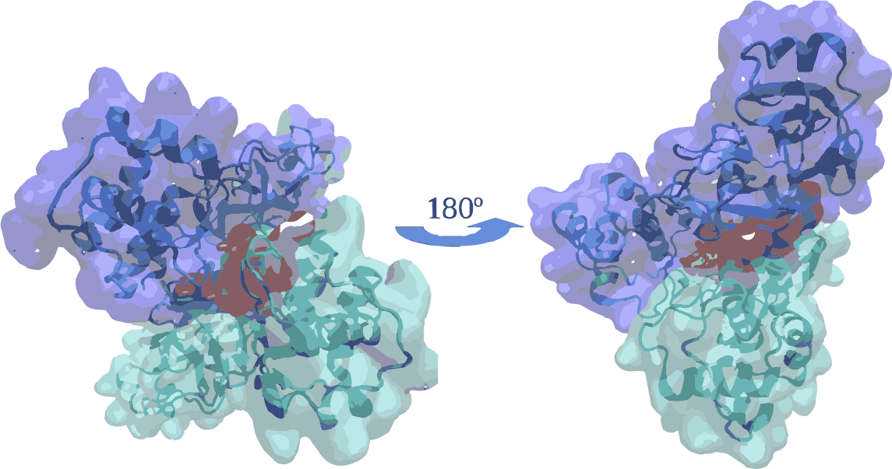
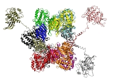
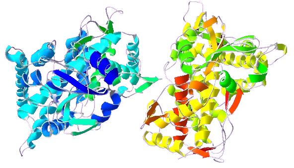
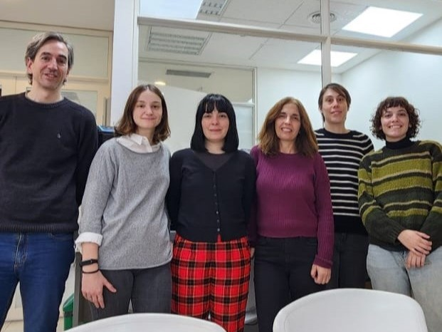

Laboratorio de Biofísica Teórica y Computacional
Bienvenidos al website de nuestro lab. Acá podrás encontrar información sobre nuestra investigación en Biología Computacional, desde un punto de vista físico, nuestro trabajo como docentes en física, y algunas otras cosas.

Novedades
Trabajo preliminar en Coronavirus: Comenzando con la estructura cristalina de la proteasa principal del SARS-CoV-2, hicimos docking de un pequeño péptido, mUNO, seguido de análisis de modelos de redes elásticas, y simulaciones de dinámica molecular del complejo.
Ver también nuestra simulación de la transmisión de un virus, y el efecto del aislamiento y la reducción de movilidad en la tasa de contagio.
Investigación
Trabajamos en la interfase entre la biología, química y física. En resumen, aplicamos las herramientas de la física a sistemas biomoleculares, con el fin de entender su funcionamiento. En particular, actualmente estamos interesados en estos temas:
CaMKII

Estudiamos los cambios conformacionales de la enzima debido a la fosforilación de ciertos residuos, responsables de iniciar la transición de un estado autoinhibido hacia uno activo.
Enzimas CYP450

Estudiamos los cambios conformacionales de la enzima debido a la fosforilación de ciertos residuos, responsables de iniciar la transición de un estado autoinhibido hacia uno activo.
Diseño de drogas
Estudiamos los cambios conformacionales de la enzima debido a la fosforilación de ciertos residuos, responsables de iniciar la transición de un estado autoinhibido hacia uno activo.
Energía libre
Estudiamos los diferentes métodos que actualmente se utilizan para investigar estas cuestiones, enfocándonos en la validez de las presunciones implícitas en ellos.
En cuanto a las herramientas que usamos, ellas son mayormente métodos teóricos y simulaciones moleculares computacionales.
Docencia
Hemos estado a cargo de distintos cursos en física y química, y estamos actualmente compilando en este website nuestras notas de curso.

Colaboraciones, estudiantes, y postdocs
Siempre estamos en busca de colaboraciones con investigadores con intereses similares a los nuestros, quienes puedan complementar nuestros puntos de vista. Consultas de estudiantes y postdocs son siempre bienvenidas.
Donaciones
Si hallas la información/notas/software de estas páginas útiles, o si te interesa ayudar al estudio de los temas que investigamos, te sugerimos que consideres la posibilidad de hacer una donación (presionando en el boton «DONAR») para ayudar a desarrollar nuevas herramientas, o comprar nuevas y más potentes computadoras donde poder hacer nuestros cálculos. Muchas gracias!